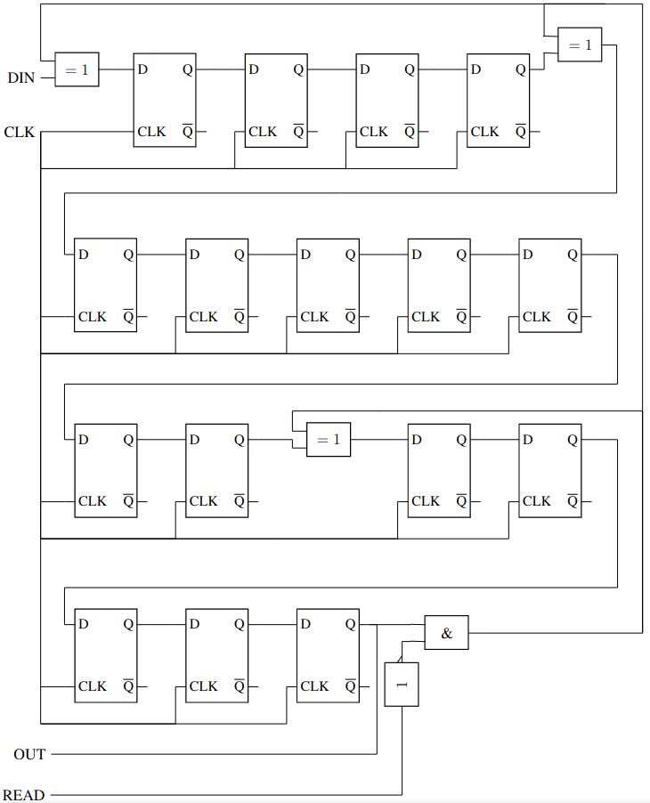

Communication circuits
and devices
Jaka Kovač S51JK, G3B
Digital communication
ASCII

Mathematics behind CRC
Finite fileds
| $0 + 0 = 0$ | $0 - 0 = 0$ |
| $0 + 1 = 1$ | $0 - 1 = 1$ |
| $1 + 0 = 1$ | $1 - 0 = 1$ |
| $1 + 1 = 0$ | $1 - 1 = 0$ |
Finite fileds
| $0 * 0 = 0$ | |
| $0 * 1 = 0$ | $0 / 1 = 0$ |
| $1 * 0 = 0$ | $1 / 0 = 1$ |
| $1 * 1 = 1$ |
Polynomials
Encoding message as polynomial
Polynomial devision
Cyclic redundany check
CRC generation
CRC validation
Circuit design
Circuit design
Great resources
- Ben Eater: Hardware build: CRC calculation
- Ben Eater: How do CDCs work?
- J. Vraničar et. al: Priročnik za radioamaterje
- S51KJ, S54UNC, S50ZK: Radioamaterski tečaj 2022